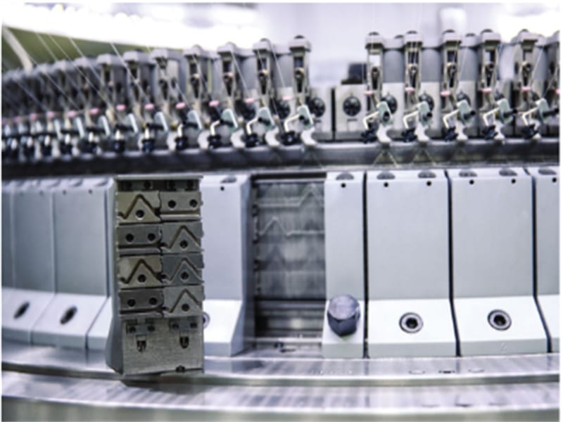
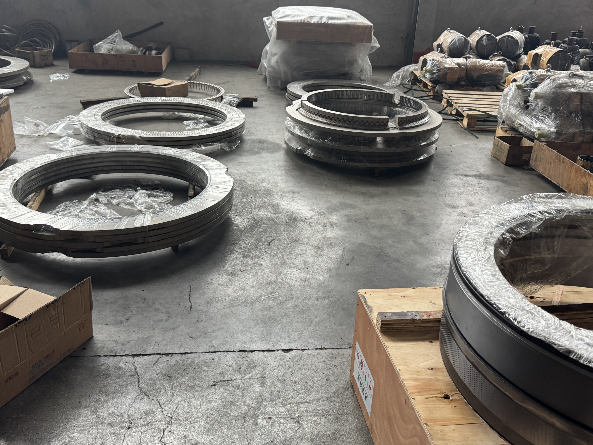
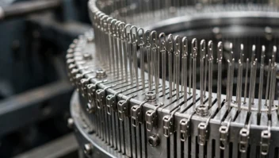

Essential Maintenance Tips to Increase the Life of Knitting Machines
Regular lubrication of cylinder tracks, cleaning lint accumulation, and inspecting latch needles prevent major mechanical breakdowns and ensure maximum fabric output.

Regular lubrication of cylinder tracks, cleaning lint accumulation, and inspecting latch needles prevent major mechanical breakdowns and ensure maximum fabric output.

Computerized flat knitting machines boost knitwear factory throughput with multi-gauge needle selection, dynamic stitch stepping motors, and instant CAD pattern loading for sweaters, pullovers, and collars.

Why proper leveling, yarn feeder calibration, and tension balancing during initial installation prevent fabric defects and uneven GSM density.

Using genuine heat-treated steel needles and sinkers reduces cylinder friction, minimizes drop stitches, and saves costs on frequent replacement parts.

Explore the structural and output differences between single jersey and interlock double jersey machines to optimize fabric speed, elasticity, and gauge precision.